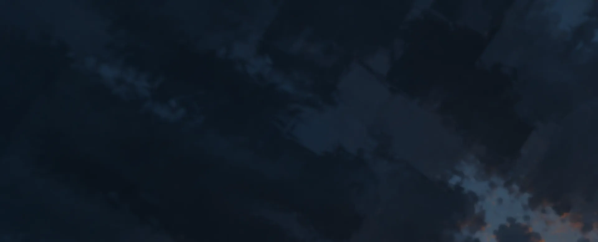

The Cartographer of Rovelle
Her stories, her harbor city, and the terminal agent that carries her name.
$ npm install -g mira-voss
Rovelle · MØBIUS · two stories
Rovelle · MØBIUS
npm · closed source
Choose a place on the website
A reader’s chart, drawn from the story. Not to scale.